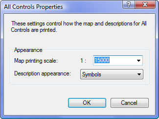

All Controls Properties
Changes how the All Controls map will display, and how the control descriptions for All Controls will print.

The following properties can be changed:
Map printing scale: The scale that All Controls map is to be printed at. This affects the size of the control circles on the map when displayed.
Description appearance: Controls how control description sheets appears if printed with "Course Default". The choices are:
- Symbols: the standard IOF symbolic description sheet, with 8 columns and symbols used to describe controls.
- Text: instead of symbols, an English language textual description of the control is used. The textual description fills the area normally occupied by the last 6 columns of the description. The textual description is automatically generated.
- Symbols and Text: The IOF symbols, with text equivalents to the right. The textual description for each control is automatically generated.